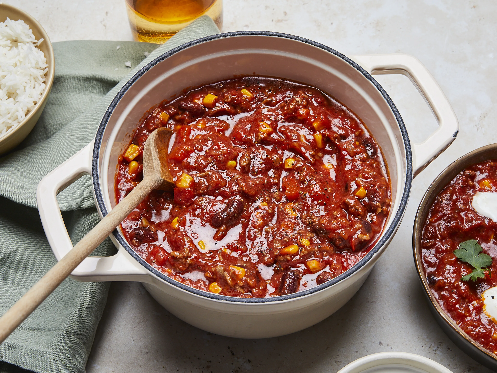

Hearty Chili Con Carne Recipe
Ingredients:
- 500g ground beef
- 1 onion, chopped
- 2 cloves garlic, minced
- 1 red bell pepper, diced
- 1 can (400g) diced tomatoes
- 1 can (400g) red kidney beans, drained
- 1 tablespoon tomato paste
- 1 teaspoon cumin
- 1 teaspoon paprika
- ½ teaspoon chili powder (adjust to taste)
- ½ teaspoon salt
- ¼ teaspoon black pepper
- 1 tablespoon olive oil
Instructions:
- Heat olive oil in a large pot over medium heat.
- Sauté onions, garlic, and bell pepper until softened.
- Add ground beef and cook until browned.
- Stir in tomato paste, diced tomatoes, kidney beans, and spices.
- Simmer for 30 minutes, stirring occasionally.
- Serve hot with rice, tortilla chips, or bread.